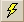

You can create the layout of a new dialog box in the left pane of the Scr document
window.
To create a new dialog box in the SCR editor, you must already have an Scr document
window open.
-
To open the SCR editor, you must already have an Scr document window open.
Select SCR Dialog Editor from the View window of ASAP
Workspace.
-
To activate the SCR Input editor, right-click SCR Input
in the ASAP Workspace window.
This action opens a new Scr Editor window.
-
Use the dockable Scr toolbar to drag and drop text boxes and check boxes, and
assign fonts.
-
To preview a dialog created with the SCR Editor, click  to run the script